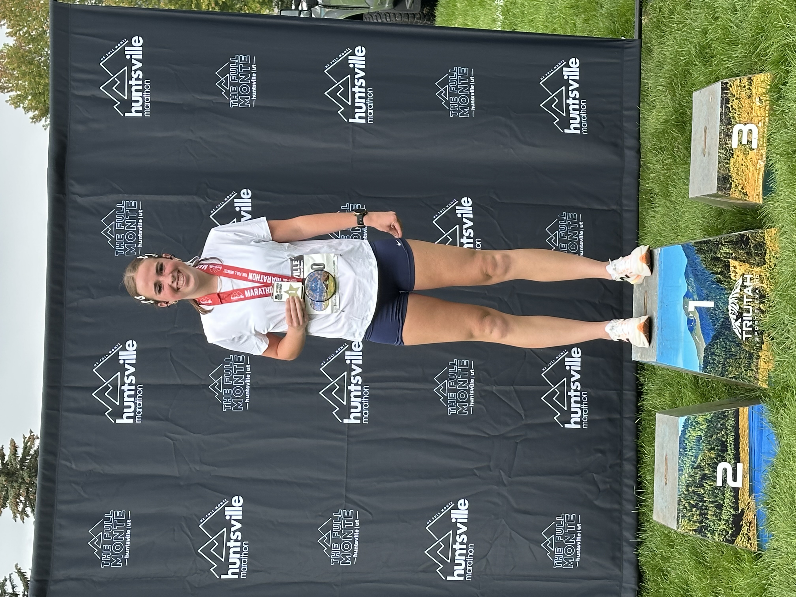
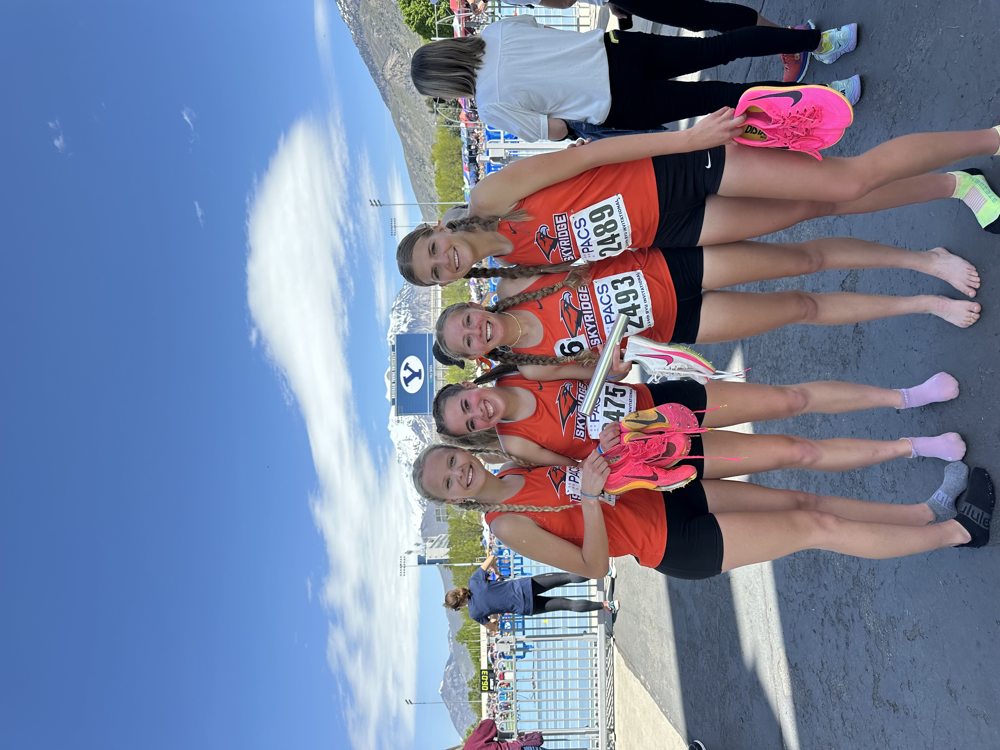
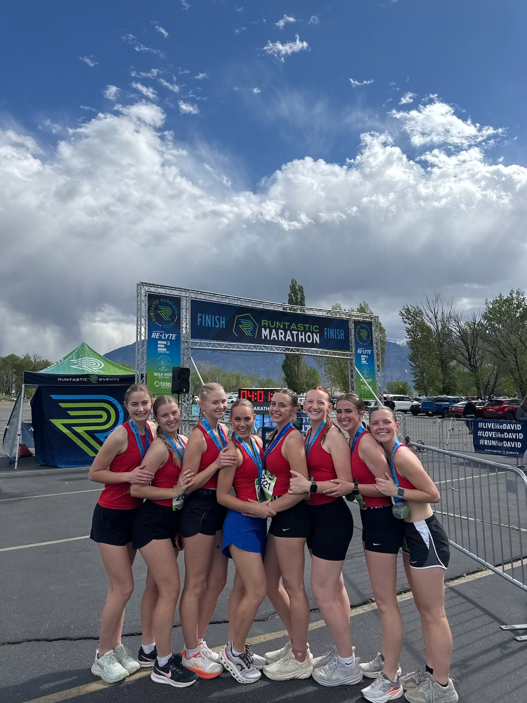
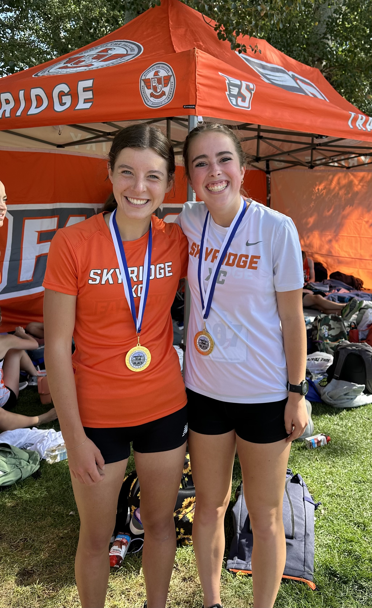
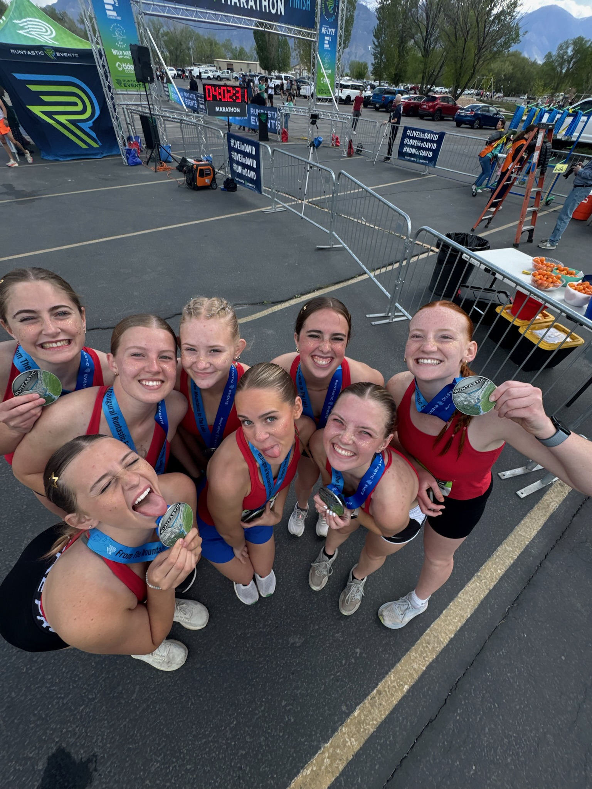
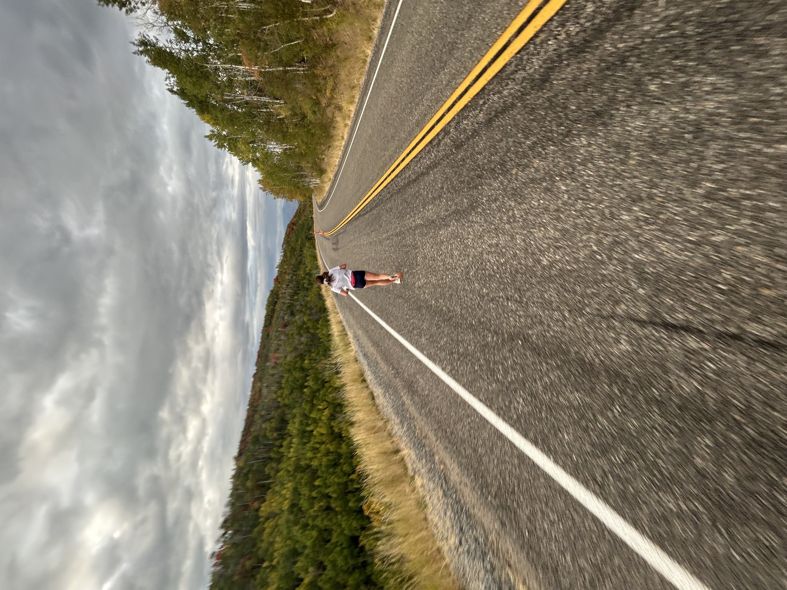

Lifestyle
My Running Journey
From first races to future finish lines, this page tracks my progress, goals, and love for running.
Running Collage






Races I Have Run Since High School
Thoughts and highlights:
- Charity 5k
- Fun simple run and won a gift card!
- Huntsville Marathon
- First marathon!
- Super pretty course running down the canyon
- Good amount of downhill running and flat terrain
- Good weather
- Thanksgiving Turkey Trot
- Fun run with family and friends
- Great Arizona weather
- Runtastic Marathon Relay
- So So fun to do with friends
- Perfect running weather
- Partly down Provo canyon
- Cute running outfits
Races I Want to Run
- Boston Marathon
- New York City Marathon
- St George Marathon
- A Ragnar Relay
- California Big Sur Marathon
- Boulder Boulder 10K
- Spartan Race
Workout Inspiration Video
Tableau Dashboards